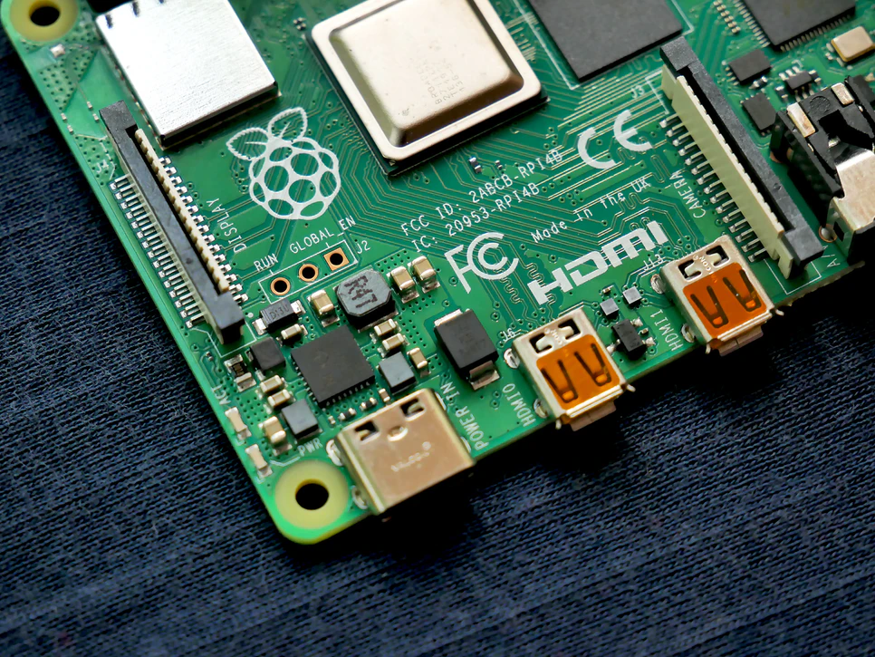

IT Technologies
Raspberry Pis, Arduinos, Makey Makeys and other small computing devices
What does it do?
Raspberry Pi’s, Arduino’s, Makey Makeys are a set of devices classified as single-board microcontrollers. Single-board microcontrollers are similar to a fully functioning PC in many ways, as they include a microprocessor, I/O circuits, a clock generator, RAM and stored program memory; essentially smaller versions of most parts you’d find on your day to day desktop or laptop. However, in the case of microcontrollers such as the Raspberry Pi or Adruino, all of those components are built onto a single printed circuit board, one that can fit in the palm of your hand. Single-board microcontrollers have been favoured by new developers and innovators for a while now as they come with an open supply hardware, they are suited for operation with many OS and they’re very simple to use. The huge processing power in such a compact board and the many interfaces it supports also make it so highly favoured by many. Microcontrollers have many many uses that make them versatile and able to be used by experienced developers and computer beginners at the same time. They have been used in the past for complete desktop replacements, media centers, retro gaming machines, servers and many other automation processes. Anything that you could imagine a low end fully functioning PC could do, single-board microcontrollers such as the Raspberry Pi can do just as much. As the first Raspberry Pi was only released in 2012 and the first Arduino was released in 2005, these are relatively new machines in the context of other products in the computing world. As the computing industry grows and companies learn how to make smaller and smaller computers that run faster than each one before it, microcontrollers have been growing with them. Each year all the competing companies are releasing new iterations of their products with more compact designs, faster processors and more capability.
What is the likely impact?
With microcontrollers such as Raspberry Pis and Arduinois excelling at single defined tasks to such a level of efficiency, they're likely to be implemented in many many ways seen all around the world. Microcontrollers can be seen in use in many automatically controlled products and devices, such as car engine control systems, medical devices, remote controls, office machines, appliances, power tools, toys and other systems you might find embedded in something else. With the development of new and improved microcontrollers, this will allow many new developers and innovators to think differently when it comes to computers and give them a platform to experiment with that is easy to learn and cheap to fund As these devices become more advanced, so does the level of intelligence, automation and potential for the devices that they’re implemented in. Although these devices may not replace or make any jobs redundant in the foreseeable future, it is likely that having the set of skills to use a microcontroller in a way that is efficient and useful to a company could become sought after.
How will this affect me?
Microcontrollers have been affecting everyone in their day to day life more than most people would assume. They may not realise, but when they are using a toaster, setting their alarm clock, driving their car, using a printer, a keyboard or a telephone system, microcontrollers are being used in all of those devices, right underneath their nose. The advancement of microcontrollers and their efficiency means the devices regular people use every day will have the capacity to become smaller, more efficient and all be running off a board smaller than their thumbnail. Over time we will all experience, but might not see the development of these technologies.